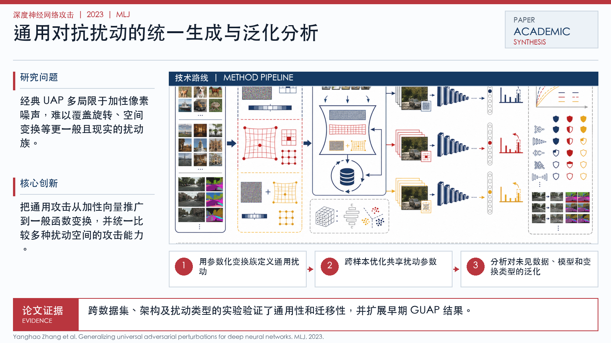

Problem
解决的问题
经典 UAP 多局限于加性像素噪声，难以覆盖旋转、空间变换等更一般且现实的扰动族。
Attacking on DNNs · 2023 · MLJ
Generalizing universal adversarial perturbations for deep neural networks
Problem
经典 UAP 多局限于加性像素噪声，难以覆盖旋转、空间变换等更一般且现实的扰动族。
Value
跨数据集、架构及扰动类型的实验验证了通用性和迁移性，并扩展早期 GUAP 结果。
Paper-grounded Academic Summary
该代表页依据原文摘要、贡献段与方法图注生成。方法视觉由 ImageGen 按论文证据逐篇绘制，中文研究问题、技术路线、创新点与实验结论采用确定性排版，以保证内容与字符准确。
打开原文 PDF
Technical Route
Innovation